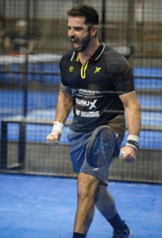

A Guinux, é uma empresa apaixonada por desafios nos seus mais de 20 anos.
Encontramos na história do Bruno uma fonte inesgotável de inspiração e acreditamos profundamente que o esporte vai muito

além da competição e dos resultados; ele é um meio de expressão da emoção humana, uma narrativa de superação e dedicação. Bruno, com sua garra incansável, sua persistência inquebrantável e a vontade indomável de vencer, personifica os valores que defendemos na Guinux. Seu comprometimento e dedicação aos seus objetivos servem como um farol brilhante para todos nós, iluminando o caminho para alcançar o sucesso.
Essa parceria com Bruno não é apenas uma colaboração comercial; é uma aliança construída sobre a base sólida da confiança mútua e do respeito pelos princípios que compartilhamos. Estamos felizes em fazer parte da jornada de Bruno e ansiosos para testemunhar seu crescimento contínuo e suas conquistas.


Na Guinux, continuaremos a apoiar e celebrar histórias como a de Bruno, que nos lembram que o esporte não é apenas um jogo, mas uma fonte infinita de inspiração e motivação para atingirmos nossos objetivos, enfrentar desafios e nunca desistir de nossos sonhos. Estamos comprometidos em espalhar essa mensagem de determinação e paixão por meio do esporte, porque acreditamos que, juntos, podemos alcançar o impossível.
Vamos pra cima Bruno 👊🏻 @brunonakid
Bruno Nakid
Atual número 7 do ranking brasileiro
Principais títulos:
– Vice campeão mundial juvenil em 2001;
– Vice campeão Mundial profissional em 2012;
– Campeão Sul-americano em 2015;
– Vice Campeão Sul-americano em 2017;
– 3 Lugar nos Mundiais de 2010 e 2016
– 3 Lugar Panamericano em 2021
Todos pela seleção Brasileira profissional.